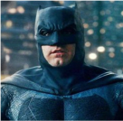
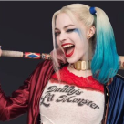

Batman
Bruce Wayne é o único personagem a se identificar como Batman e aparece em Batamn, Detective Comics, Batman e Robn e Batman: O Cavaleiro das Trevas. Dick Grayson retorna ao manto de Asa Noturna.

Arlequina
A criação de Arlequina foi uma idea de última hora proposta pelo escritor americano Paul Dini para modificar uma cena do vigésimo segundo episódio de Batman: The Animated Series.
Arlequina
A criação de Arlequina foi uma idea de última hora proposta pelo escritor americano Paul Dini para modificar uma cena do vigésimo segundo episódio de Batman: The Animated Series.